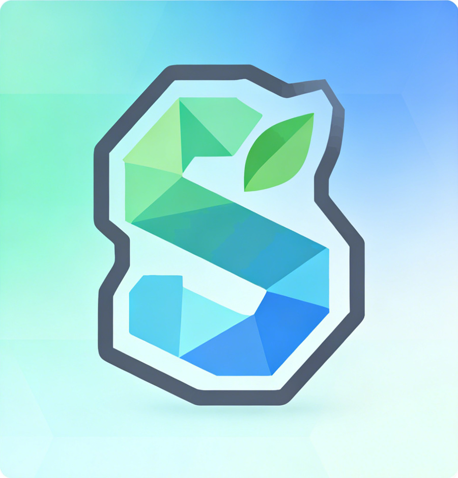
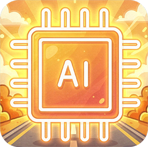
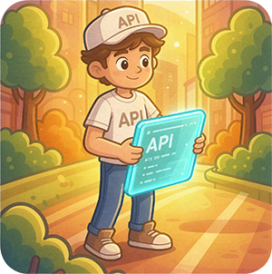
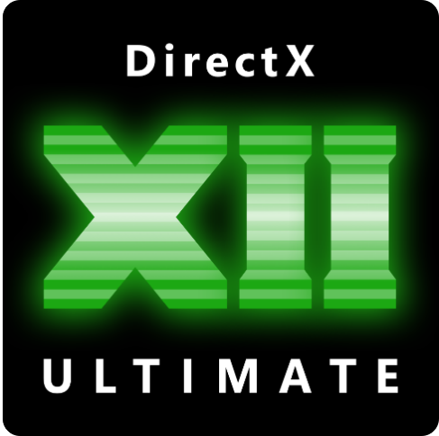
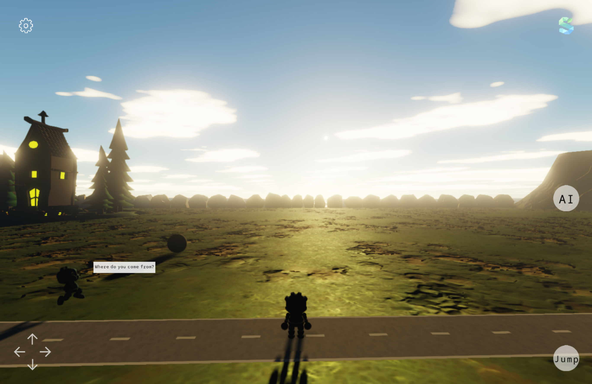
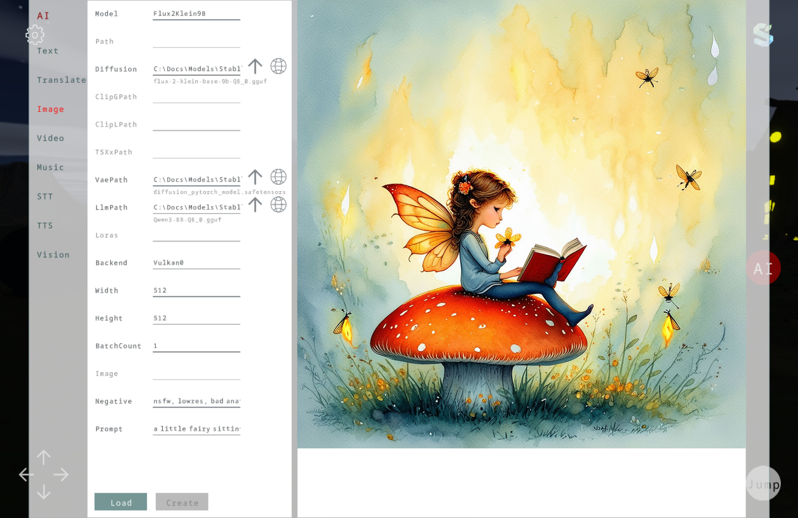

A Graphics Engine Built for Understanding
SeasonEngine is a cross-platform C# graphics engine and application framework for real-time 2D and 3D apps. PBR materials, glTF animation, cascaded shadows and global illumination are the baseline — not an upgrade path.
New here? Why this exists · how it compares to MonoGame, Godot and Stride · the two sample applications.
Run the reference application:
 Windows
Windows
 Planned
Planned
 Planned
Planned

A next-gen renderer in pure C#. No editor, no fallback paths.
The engine is code-first and editor-free by design. There is no scene editor to learn and no
project format to adopt: you declare Sprite2D,
Model and InstancedModel in ordinary
C#, and AddControl / AddPanel define
load order and layering for 2D and 3D alike.
Integration is the product
Bindings stop at the API boundary. PBR, glTF skinning, shadows, DDGI, GTAO, TAA, a dynamic day/night sky, MSDF text and 2D sprites are assembled here so they work together, on four graphics APIs, from one API surface.
One implementation per domain
Animation is glTF, only. Text is MSDF, only. One graphics API per platform — no OpenGL or
WebGL fallback. Platform divergence is confined to
DeviceServices.
Declarative bulk instancing
Declaring one InstancedModel binds many objects at once,
with per-instance skinning and morph targets. Ordinary C#, no second paradigm to adopt,
and you never write a Draw call.
Full PBR
Metallic-roughness materials, normal, occlusion and emissive maps, imported straight from glTF.
DDGI global illumination
SDF-voxelised dynamic GI with a probe irradiance atlas and Chebyshev occlusion.

Local AI layer
ONNX and GGML backends behind one API: text, image, video, music, speech and vision.

Four backends
Direct3D 12, Vulkan, Metal and WebGPU, each with its own hand-written shader set.
glTF 2.0 animation
Skinning, morph targets, animation clips and per-instance bone palettes — the one animation format.
Cascaded shadows
Three sun cascades plus a punctual slot in one atlas, with per-cascade light-space culling.
Procedural sky
LUT-based atmospheric scattering, day/night cycle, aerial perspective and procedural clouds.
MSDF text
Resolution-independent glyph atlases, laid out and instanced by the engine on every backend.
Code beside its result
A panel, two models and a quality switch. No draw calls, no render-pass wiring.
using Season.Basic;
using Season.Controls;
using Season.Panels;
using Season.Rendering;
internal class Island : Panel
{
internal Island()
{
AddControl(new Model
{
Name = "Assets/island.glb",
PosY = 0f,
Width = 60f, Height = 12f, Depth = 60f
});
AddControl(new Model
{
Name = "Assets/robot.glb",
Highlight = { Style = HighlightStyle.Wireframe },
PosX = 6f, PosY = 1f, PosZ = 4f,
Rotation = MathF.PI / 2f
});
}
}
internal class IslandApp : BaseApp
{
internal IslandApp()
{
Title = "Island";
BasicResolution = new Vector2(1920f, 1080f);
RenderQuality.DefaultGlobalIllumination = GiMode.Ddgi;
}
public override void Create()
{
base.Create();
AddPanel(new Island());
}
} DDGI · GTAO · TAA · Direct3D 12
DDGI · GTAO · TAA · Direct3D 12
Cross-platform by isolation, not abstraction
The app-facing model is shared. Each platform keeps its own renderer and its own shaders, and
platform-specific capabilities live behind DeviceServices.
Platforms


Backends



| Platform | Target | Entry point | Backend |
|---|---|---|---|
| Windows | net10.0-windows10.0.19041.0 | WindowsApp.Run(app) | Direct3D 12 |
| Linux | net10.0 | LinuxApp.Run(app) | Vulkan |
| Android | net10.0-android | AndroidApp.Run(app) | Vulkan |
| iOS | net10.0-ios | iOSApp.Run(app) | Metal |
| Mac Catalyst | net10.0-maccatalyst | MacCatalystApp.Run(app) | Metal |
| Web | net10.0-browser | WebApp.Run(app, ...) | WebGPU path |
A fixed pass schedule, not a frame graph
The frame shape is visible in engine code. It gives up some scheduling generality and buys a pipeline you can read, debug and align across four backends.
Compute effects register into the two compute phases and leave no residue when a backend cannot run them, so bloom, GTAO, TAA, DDGI and the sky LUTs extend the pipeline without touching the scene model.
BaseApp
-> Panel tree
-> Controls (Sprite2D, Texts, Shape, Mesh3D, Model, InstancedModel, ...)
-> IGraphics backend
-> Direct3D 12 / Vulkan / Metal / WebGPUWhat is actually implemented
Audited against the source, not against marketing copy. The absent rows are listed for the same reason as the shipped ones.
| Capability | Status | Where it lives |
|---|---|---|
| Fixed pass schedule with compute phases | Shipped | Rendering/RenderPass.cs |
| Bloom, GTAO, TAA, depth debug views | Shipped | Rendering/Effects/ |
| DDGI dynamic global illumination | Shipped | Effects/Ddgi.cs |
| Sky atmosphere, day/night cycle, clouds | Shipped | Effects/SkyAtmosphere.cs |
| Cascaded shadow maps (3 + 1 punctual) | Shipped | Rendering/CascadedShadow.cs |
| GPU instancing with skinning and morph targets | Shipped | Controls/InstancedModel.cs |
| Per-instance picking and highlight modes | Shipped | Panels/ObjectPicker.cs |
| Property editing in the reference app | Partial | fixed fields, no property grid |
| Scene serialization, save and load | Absent | no scene format yet |
| Indirect draw, texture compression, occlusion culling | Absent | planned in Track A |
The reference application
Apps/Engine is not a minimal demo. It is the app used to validate
the renderer when every system runs at once — and it doubles as the regression target.

Sky atmosphere Debug mode
Debug mode
 Picking · Highlight
Picking · Highlight
The AI layer
Local inference is a separate stack that sits beside the engine, not inside the renderer. Its contribution is not another backend — it is making dependency-heavy local models practical inside a real application: one API over both ONNX Runtime and GGML, version-consistent native runtimes, and packaged CUDA / cuDNN dependencies instead of a manual install guide.
Libraries today
Text and translation, image generation and editing, video, music, text-to-speech with voice cloning, speech-to-text, vision and OCR.
TextTranslateImage VideoMusicTTS STTVisionBackend selection covers CPU, DirectML and CUDA. Model weights are never bundled: each panel links to its source repository.
Where it is going
- Generated assets flowing back into the scene as engine resources.
- Optional external cloud APIs alongside the local backends.
- C# code generation, so an agent can assemble a graphics application from a prompt.
The engine core and the foundational AI libraries are MIT. SeasonAI,
the productised application layer, is the commercial part — that split is what funds the
open work.

The local AI layer in full → — including the runtimes behind each capability, and the gap that still separates a generated image from an engine asset.
Get started
Add the library
dotnet add package SeasonEngineOr reference the project directly from a clone of the repository.
<ProjectReference Include="..\Season\Season.csproj" />Run the reference app
git clone https://github.com/SeasonRealms/SeasonEngine.git
cd SeasonEngine
dotnet run --project Apps/Engine/Engine.csproj -f net10.0-windows10.0.19041.0
On Linux use -f net10.0. Requirements and per-platform
notes are in the getting started guide.